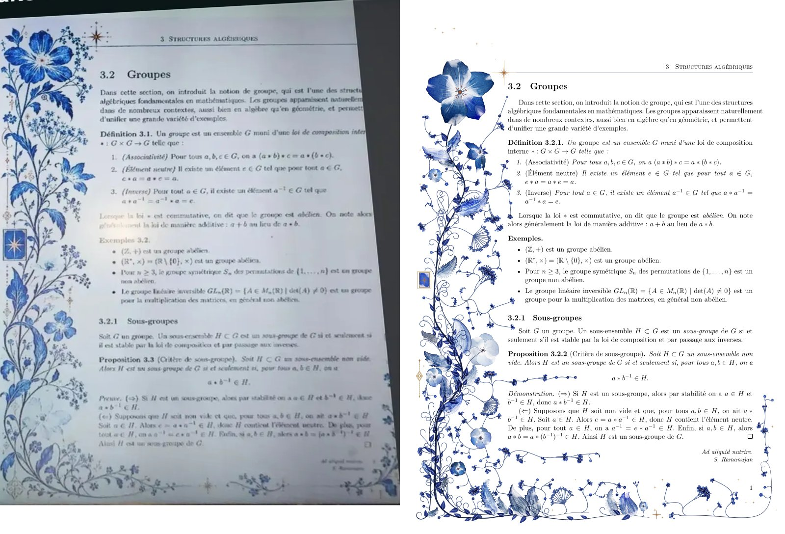
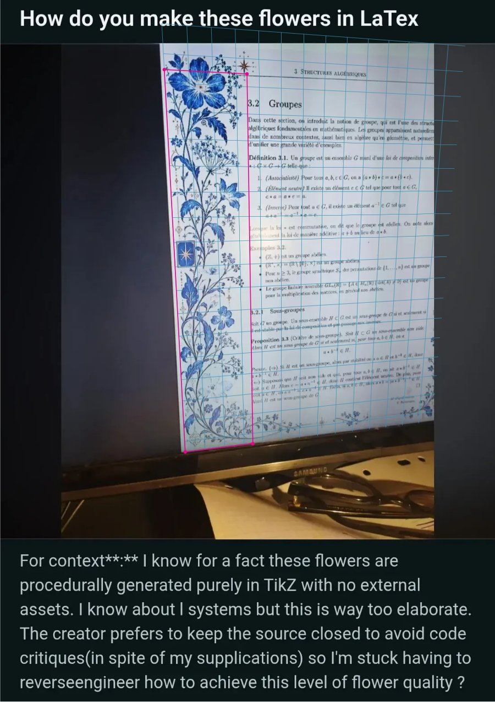
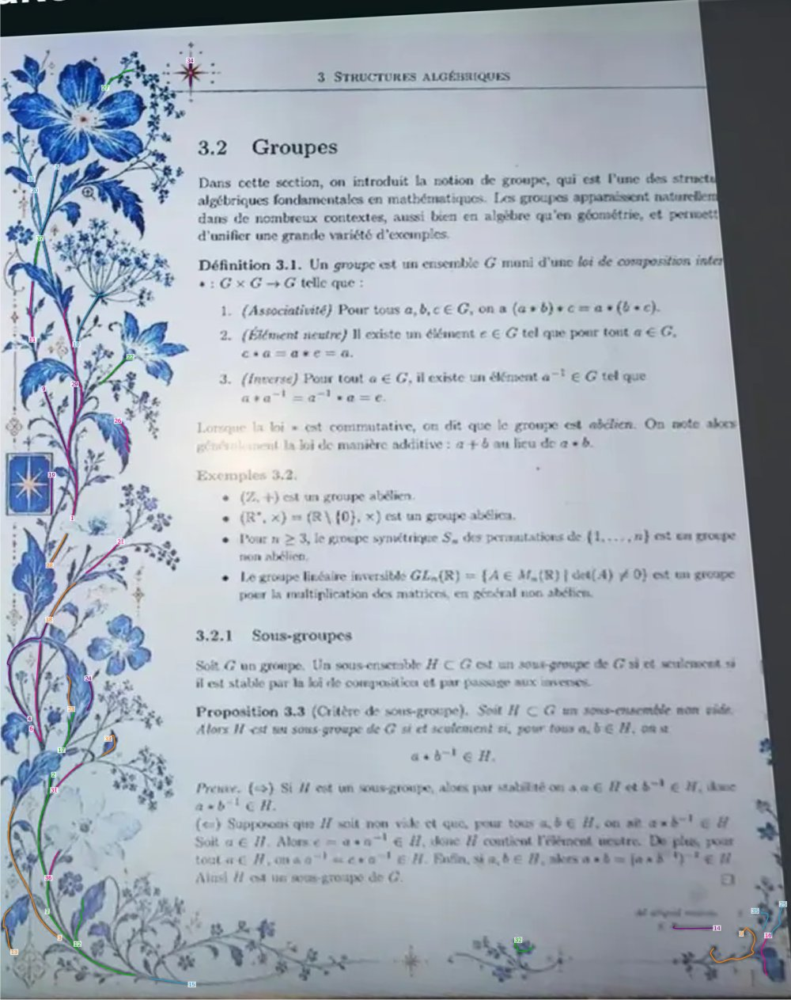
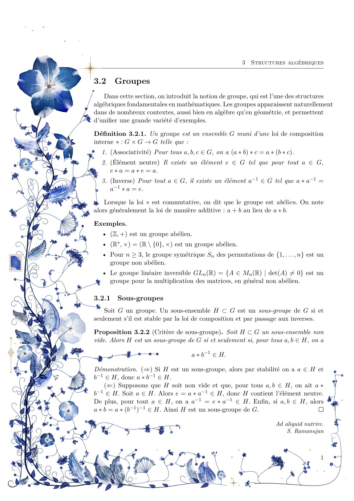
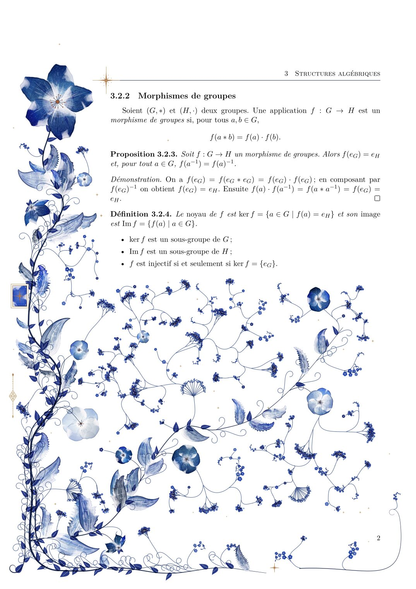
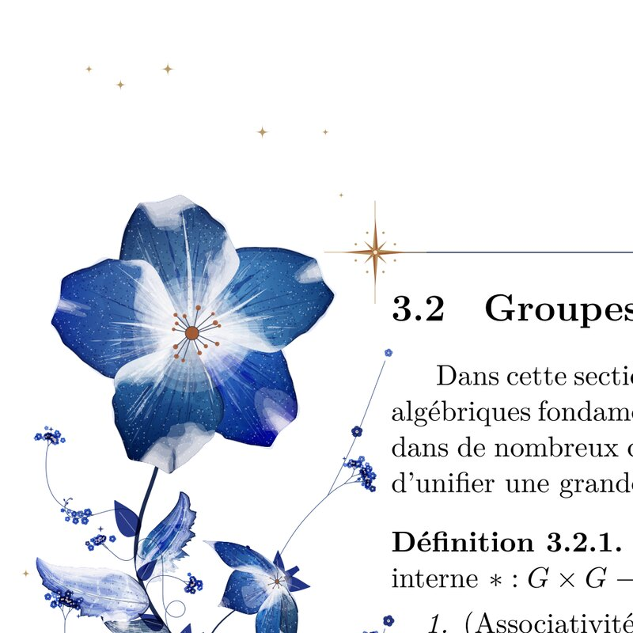
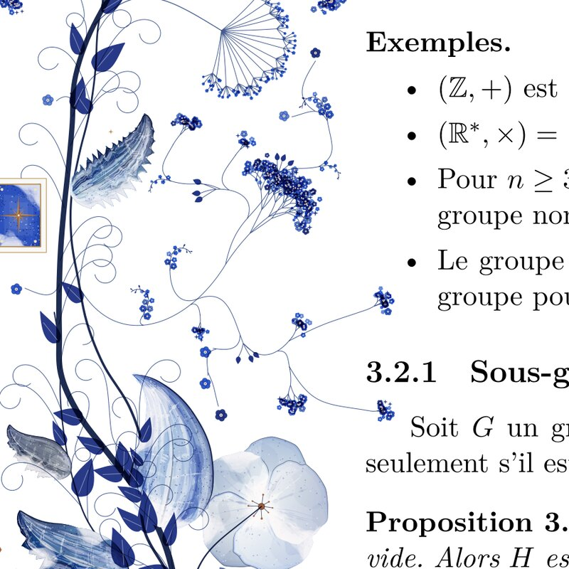
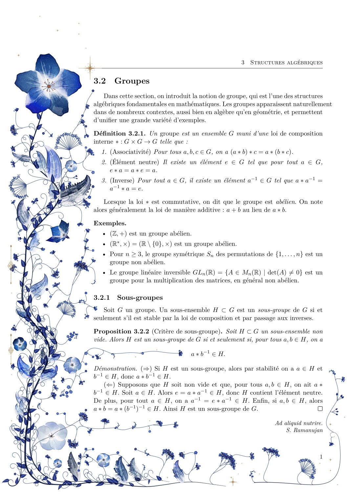
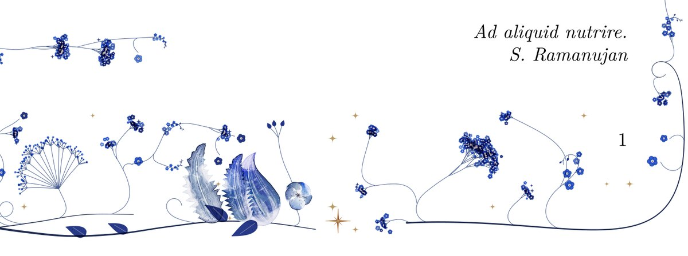
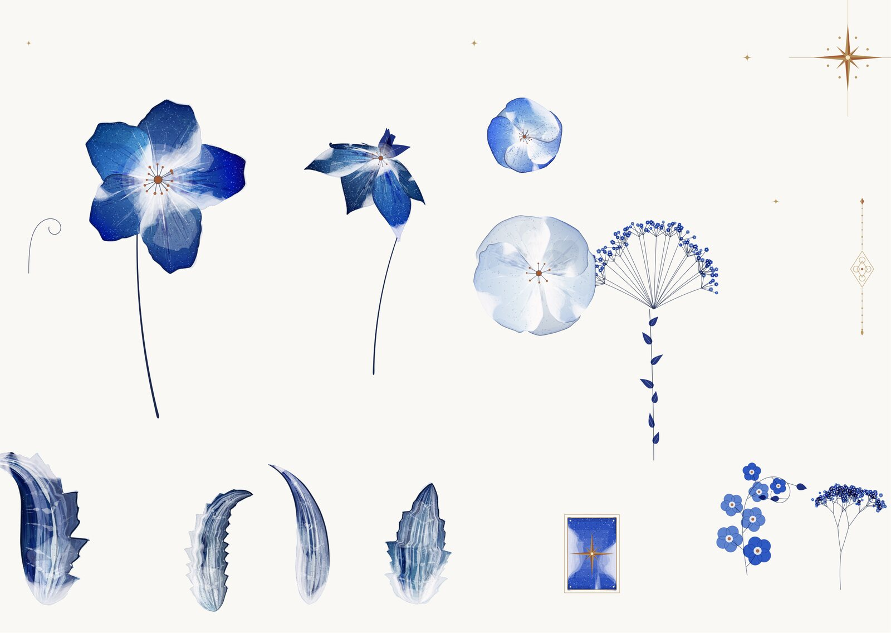

A reconstruction of the watercolor botanical margins from the r/LaTeX post. Every page grows its own vine from a seed. The vine measures where the text actually sits and fills the space the text leaves.
The original source is closed. This is an independent implementation built from studying the photograph, not a copy of it.

tex/reference.tex.The photo shows a monitor at an angle. Four straight features fix the page plane: the page's left edge, the text block's left edge, the running-head rule and the page's bottom edge. Their four intersections give a homography, solved by SVD. Two text baselines that played no part in the fit check it: their slopes go from +0.019 and −0.058 in the photo to −0.009 and +0.006 after the warp. The warped page is 0.456 pt per pixel, so it can be measured in page points.
To trace the stems, navy line work is separated from the blue washes by lightness and chroma in OKLab. The mask is kept to the paper and away from the page edges, then thinned to a one-pixel skeleton. The longest path through each skeleton component becomes a spline, and the search repeats so branches come out as their own curves. Both pages are drawn by tex/reference.tex: the photo goes in with \includegraphics, and TikZ draws the fitted plane and the splines on top.


The defaults are fitted to the reference by form, not by where each element lands. Both pages are reduced to the same statistics: how much of the margin column is painted, band by band, across and down; how much of the painted area survives morphological openings of 1.5, 4 and 8 pt (large solid shapes survive, fine sprays do not); and the OKLab lightness of the painted pixels. The photo's vignetting is divided out first, and the render's blacks are lifted to match the backlit screen in the photo. An evolution strategy over 26 settings, scored on three seeds, proposes values; the defaults take most of them, with a few set by eye where the statistics can be met by a page that does not look right.
| Reference | Render | |
|---|---|---|
| Margin column painted | 44% | 36% |
| Painted, outer edge to text (5 bands) | 55 56 46 43 19% | 13 52 48 41 26% |
| Survives a 4 pt opening | 40% | 52% |
| Survives an 8 pt opening | 11% | 25% |
| Lightness p10 / p50 / p90 (OKLab L) | 0.47 / 0.72 / 0.90 | 0.55 / 0.78 / 0.92 |
| Share of deep pixels (L < 0.55) | 19% | 10% |
| Painted share of the foot | 22% | 26% |
The middle of the column now matches. The outermost band does not: the reference fills it with leaves growing out toward the page edge, while the render's stems keep inside the cartouche and little grows outward. The render's large shapes are more solid than the reference's lacy, veined leaves, and its darks are a little lighter. The fit would close the edge gap by moving the stems to the page edge, but that pushes out the cartouche, so the defaults keep them in.
Page 1 is full of text, so the vine stays in the margin and along the foot. Page 2 ends halfway down, so a branch leaves the margin and grows into the empty half. Nothing in the document tells it to; the generator reads the shipped page.


The detail sits in the shapes, not just their count. Petals are rim-dark washes that bloom white toward the eye, with streaks. Leaves have one lit half, white veins and engraved hatching. Baby's breath is a recursive fork that ends in single florets.




Pure TikZ, meaning \draw commands parsed by TeX, is far too slow for about 1,300 shapes per page. Even PGF's quick path commands, the layer TikZ compiles to, came to 20 MB of macros per page that TeX spent about 11 seconds expanding. So the geometry is computed in Lua and written straight into the PDF as drawing operators, in one literal node inside a pgfpicture. TeX never reads it. Only the opacity states and gradient patterns pass through TeX, registered in PGF's own page-resource dictionaries, so the page still behaves like any other PGF picture. A page now compiles in about 2 seconds. A PGF backend remains for comparison (FLORA_BACKEND=pgf); the two render the same image to within anti-aliasing.
q /flgs3 gs 0.080 0.280 0.780 rg
111.98 698.58 m 112.40 701.18 113.10 703.02 114.27 704.44 c ... f Q
q /Pattern cs /flpat12 scn ... f QNo shape is a flat fill. Each petal and leaf is painted in layers, mostly with the multiply blend mode, so overlapping pigment darkens the way real glazes do:
A petal's half-width at fraction t of its length is W·sin(π·tᵏ)ᵉ·smoothstep(0, claw, t), with noise on the rim and a Gaussian notch at the tip. Setting k < 1 moves the widest point toward the tip; e < 1 rounds it. Leaves grow around a midrib whose heading bends linearly and hooks with t⁴. Serrations are a sawtooth that rises slowly and drops sharply, so teeth lean toward the tip. Spacing and depth are jittered so no two teeth match. Tilted flowers are cupped petals in 3D, rotated, projected and painted back to front.
Composition runs on an occupancy grid at 3 pt resolution. Each pass claims space, so later passes grow around earlier ones:
Branches leave their parent tangentially on a Bézier whose first handle follows the parent stem, then sweep into their target. Tendrils and flourishes are grown by curvature, not by points. The heading changes only through a curvature function k(t). A tendril's curvature rises as t2.5, so it tightens smoothly through about one turn into a volute whose eye stays open at a 4 pt radius. A flourish swings through one loop, straightens, then curls the other way. A test checks that no stem turns more than 20° between samples.
LaTeX's shipout/background hook runs while the finished page sits in \ShipoutBox. Lua walks that box's node list, tracking positions the way TeX lays them out, and returns one box per line of ink. That needs only one compile, with no aux file and no second run.
Each element on its own, used for tuning against crops of the reference.

Load the package in any LuaLaTeX document. Pages are decorated as they ship out.
\usepackage{tikzflora}
\renewcommand\florseed{7} % or {random} for new flora every run
\floraoff ... \floraon % skip pagesjust tuner opens a local DialKit panel over every setting in lua/flora/tune.lua, beside the de-warped reference. Its previews skip TeX: one text-only compile records each page's measured lines, then tools/preview.lua grows the flora in plain Lua and writes it as a standalone PDF, laid under the cached text. A preview takes under a second and matches the real compile pixel for pixel (just test-preview checks this).
just trace re-runs the de-warp and stem tracing into tex/reference/; just build reference draws the three reference pages.
just build demo 1
The project lives at ~/tikz-flora. A two-page compile takes about 6 seconds. Tests cover the geometry, the occupancy grid, seed reproducibility, stem smoothness, the no-paint-on-text invariant across 12 page layouts, and an indented line measured in real LuaLaTeX.